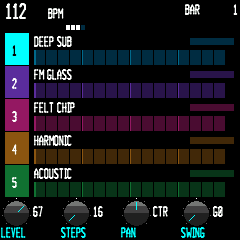
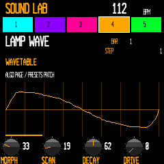
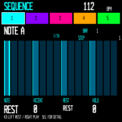
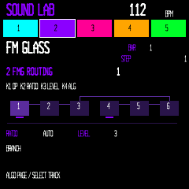
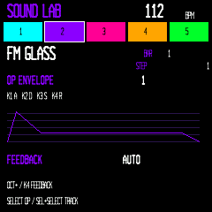
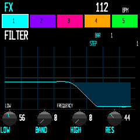

Five tracks
Four pitched tracks and a drum track with independent pattern lengths, pan, level and mute. Edit four notes per pitched step or work with 16 independent drum lanes. Set velocity, gate, hit probability and timing offset.

Four pitched tracks and a drum track with independent pattern lengths, pan, level and mute. Edit four notes per pitched step or work with 16 independent drum lanes. Set velocity, gate, hit probability and timing offset.
Browse 136 factory patches, including eight new saw programs. The original 128 patch IDs are preserved. Play the FM, analog, modeled strings, keys, formants, bell and texture engines.
Shape each track with filter, slicer, inserts, reverb, tempo delay, chorus and drive.
Follow each track in DNA Helix, Ferrofluid, Gravity Rings, Solar System, Digital VU, Slap Reactor and the Dancer.





This manual describes the v0.1.30 Nexus hardware-testing build. Installer pages identify their own firmware versions.
SLAP STUDIO opens in Song Mode. Add or duplicate a scene, then select a track clip to edit it. Choose scene bars and repeats before playing the song. During playback, click a scene to queue it. Quick REC captures the active scene’s selected clip, and drum generation applies to the current scene. Add per-bar level and pan automation for each track. Export a song for all five tracks and every scene, or export the selected scene as a standalone Studio project.
The primary browser installer offers 0.1.18. See the experimental installer for the current hardware-testing release or download the ordered patch and kit names. Display specimen · Regular specimen.